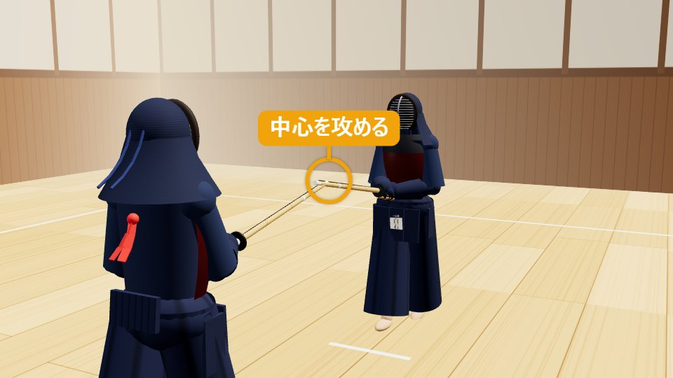
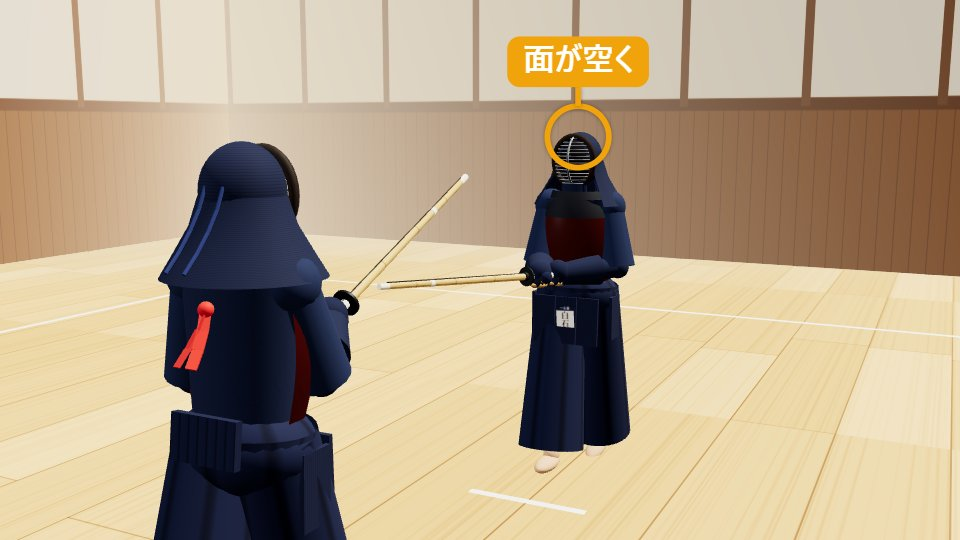
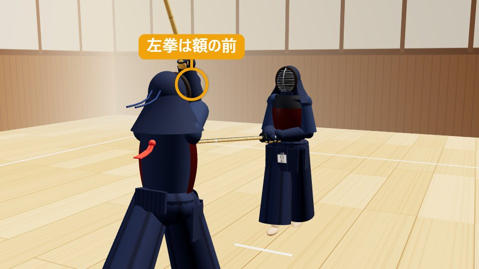
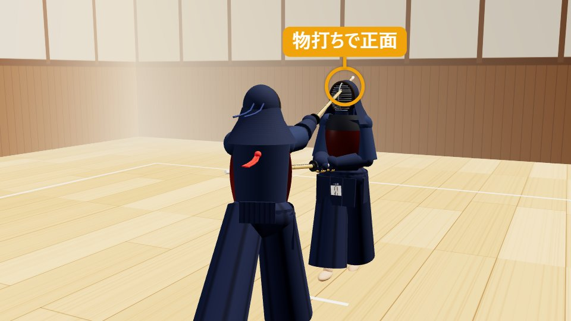
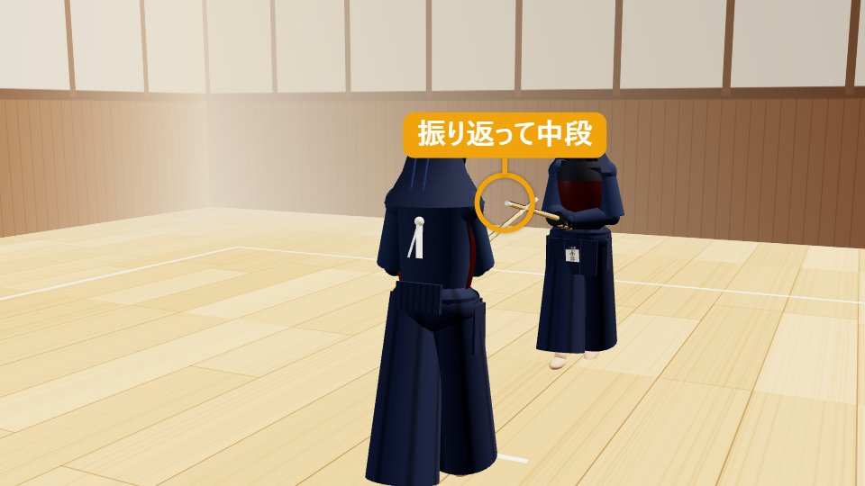

面めん
剣道のすべては、この一本から。
1面の打ち方（動作）
ドラッグで回転・ホイールで拡大縮小
1構え・攻め合い
一足一刀の間合い。剣先で中心を攻め、送り足でわずかに詰める。
有効打突チェック — 再生に合わせて点灯します
- 充実した気勢「メン」の発声
- 竹刀の打突部物打ちで打つ
- 打突部位正面
- 刃筋正しく真っすぐ振り下ろす
- 適正な姿勢背筋を伸ばし腰から前へ
- 残心抜けて振り返り構える
分解して見る（5コマ）
-

STEP 1
構え・攻め合い
一足一刀の間合いで中段に構え、剣先で相手の中心を攻める。送り足でわずかに間合いを詰め、打つ機会をうかがう。
-

STEP 2
打つ機会
相手の剣先が中心から外れ、面が空く。稽古では元立ちが剣先を開いてこの機会を作る。
-

STEP 3
振りかぶり
左拳が額の前に来るくらいまで、竹刀を真っすぐ振りかぶる（左腕は伸ばしきらず、軽く曲がった状態）。同時に左足で床を蹴り、右足から前へ出る。
-

STEP 4
打突「メン！」
右足の踏み込みと同時に、物打ちで相手の正面を打つ。両腕をしっかり伸ばし、打つ瞬間に手の内を締める。
-

STEP 5
打ち抜け・残心
打った勢いのまま自分の右側（相手の左側）へ抜け、振り返って中段に構え直す。最後まで相手から気を抜かない。
2面とは（概要）
面（めん）は、竹刀を真っすぐ振りかぶり、相手の正面（頭頂部の前方）を打つ技です。剣道で最初に習う最も基本の技であり、すべての技の土台になります。
「面に始まり面に終わる」と言われるほど、剣道で重視される技です。構え・攻め・振りかぶり・踏み込み・残心という剣道の基本動作がすべて含まれており、面の質がそのまま剣道の実力に表れます。
ここで紹介するのは、一足一刀の間合いから相手の中心を攻め、相手の剣先が中心から外れた機会に打つ「一本打ちの面」です。稽古では、受ける側（元立ち）が剣先を開いて打つ機会を作ります。
- 分類
- しかけ技・一本打ちの技
- 打突部位
- 面（正面）
- 機会
- 相手の剣先が中心から外れた瞬間
- 難易度
- ★☆☆（初級）
覚えておきたい言葉
- 正面
- 面の打突部位のうち、頭頂部の前方中央。斜め上から打つ左右の面（左面・右面）もある。
- 振りかぶり
- 竹刀を頭上へ上げる動作。基本では左拳が額の前に来るくらいまで。試合では小さく速くなる。
- 踏み込み足
- 右足で床を強く踏み、打突と同時に音を立てる足さばき。打突に体重と勢いを乗せる。
- 打ち抜け
- 打った勢いを止めずに相手の横を抜け、振り返って構え直すこと。残心の一部。
3面を打つときのコツ（技を出す側） 掛かり手
真っすぐ振りかぶり、真っすぐ打つ
竹刀は体の中心線に沿って真上に振りかぶり、そのまま真っすぐ振り下ろします。中心から外れると刃筋が通らず、相手の竹刀にも当たりやすくなります。
振りかぶりと足の始動を同時に
振りかぶってから足を出すと遅れます。左足で床を蹴る力で体を前へ運び、手と足を一つの動きにします。
左手主導で、腕を伸ばして打つ
右手で引っ張らず、左手を中心に振り下ろします。打つ瞬間に両腕を伸ばし、手の内を締めて「冴え」を出します。
左足をすぐ引きつける
踏み込んだら左足を素早く引きつけ、腰が後ろに残らないようにします。左足が流れると姿勢が崩れ、次の動きも遅れます。
背筋を伸ばし、体ごと前へ
頭を突っ込んだり、あごを出したりせず、腰から前に出ます。体全体が前に出ることで、打突に体重が乗ります。
打ったら止まらずに抜ける
打突の勢いのまま自分の右側（相手の左側）へ抜け、振り返って構え直すところまでが「面」です。打った場所で止まると残心が伝わりません。
よくある失敗
- 振りかぶりが斜めになり、刃筋が通らない
- 手だけで打ち、踏み込み足と打突のタイミングがずれる
- 打つ瞬間に頭が前に出て、腰が引ける
- 打った後に止まる、抜けた後に振り返らない
4受ける側（元立ち）が気にすること 元立ち
面の稽古での受ける側（元立ち）は、相手が「正しい機会に、正しい面」を身につけるための機会を作る役です。
剣先を開いて機会を作る
中段から剣先をわずかに中心から外し（開き）、面を打てる状態を作ります。開くのが早すぎても遅すぎても、機会をとらえる稽古になりません。
間合いを一定に保つ
一足一刀の間合いで構えます。相手の踏み込みに合わせて下がったり詰めたりしすぎないようにします。
打たせたら横へ体をさばく
打突を受けたら、相手が右側へ抜けられるように、体を少し自分の右へさばきます。正面に立ちふさがると衝突の危険があります。
あごを引いて受ける
あごを引き、首を固めて受けます。あごが上がると、喉など防具の薄い部分に竹刀が当たる危険があります。
段階的に難しくする
最初は大きくゆっくりした面から始め、慣れてきたら小さく速い、試合に近い面にしていきます。
ひと言フィードバック
「真っすぐ当たっている」「今は少し横から」など、受けた側だから分かる打ち方の感触を伝えます。
受ける側の学び：自分の剣先が中心から外れた瞬間が、そのまま相手の「打つ機会」になることが体で分かります。構えて中心を取り続けることの大切さを理解できます。
5面が一本になる条件・ならない理由
有効打突は、充実した気勢、適正な姿勢をもって、竹刀の打突部で打突部位を刃筋正しく打突し、残心あるものとする。
剣道試合・審判規則 第12条（全日本剣道連盟）
竹刀が当たっただけでは一本になりません。面の場合、6つの条件はそれぞれ次のように見られます。
| 条件 | ○ 一本になる面 | × 一本にならない例 |
|---|---|---|
| 充実した気勢 | 「メン」の発声が、踏み込みと打突に一致している | 声が小さい／打った後に遅れて声を出す |
| 適正な姿勢 | 背筋が伸び、腰から前に出ている | 頭が突っ込む・のけぞる・腰が引ける |
| 竹刀の打突部 | 物打ち（剣先から約4分の1）で打っている | 竹刀の中ほどや鍔元で当たる |
| 打突部位 | 相手の面（正面・左右面）を打っている | 肩や面布団の端、面金に当たる |
| 刃筋正しく | 振り下ろす方向と竹刀の刃の向きが一致している | 竹刀が斜めに当たる・側面（ひら）で当たる |
| 残心 | 打った後に抜けて振り返り、構え直している | 打った後に止まる・背を向けたまま |
審判の判定
- 審判は3人（主審1人・副審2人）。2人以上が旗を上げると一本になります。
- 相手に竹刀で受けられた打突は、面に届いても有効打突とは認められにくくなります。
- 相面（同時に面を打ち合う）の場合は、どちらが先に・より確かに打ったかで判断され、どちらも取られない（相打ち）こともあります。
面を一本にするコツ
攻めて「打つ機会」で打つ
相手が中心を取って構えているところへ面を打っても、竹刀で防がれるか、出ばなを打たれます。剣先で中心を取り、相手の剣先が外れた・下がった・居着いた瞬間に打つと一本になりやすいです。
冴えのある打突
押しつけるような重い打ちではなく、短く鋭い打突音が出る打ちが評価されます。打つ瞬間の手の内の締めと、打った後の緩めがポイントです。
抜けて振り返るまでが一本
打突後に勢いよく抜け、振り返って構えることで残心がはっきり伝わります。打った後の動きも審判は見ています。
観戦のポイント：この3つが見えたら「一本」
- 竹刀の先の方（物打ち）が、相手の頭の上に真っすぐ当たっている
- 「メン」の声・踏み込みの音・打った音がそろっている
- 打った人がそのまま抜けて、振り返って構え直している